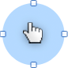

Order a MarcoBox kit
Download Web Widget
Days:
M
T
W
Thur
F
S
Sun
Display time:
to
Display:
save this location
x

Use pointer to click and move map to the desired geographic location. Once located, double click on the area desired to create a new location. To adjust the perimeter of the geo-fence, grab edge boxes to adjust.